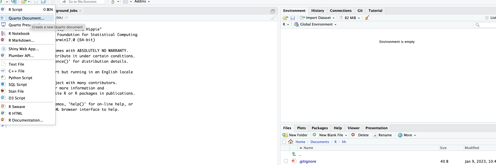

Introduction
Kia ora!
Welcome to PSYC344.
UsmanAfzali | Usman Afzali | usman-afzali | usmanafzali.com
This website contains R code for statistics labs of the Year 3 methods and statistics course. The code is specific to the 2022 Summer course (2022-2023), but is very similar to the previous and hopefully future occurrences of the course.
Labs
Lab 1 and 2
These labs are not included here as they don’t involve any data analysis. First, let’s learn how to use the available code for lab files.
How to use Lab Files
Each of the lab files is a Quarto Markdwon or .qmd document. One way of using and replicating the code is to use the latest version of RStudio, at least Version: 2022.12.0+353 or later on your computer. Within RStudio, click on new file drop down menu and open a new Quarto Document (see the first figure), and name it. Once the .qmd document is opened, go to the source tab, erase the default code and paste the code from the corresponding lab file (from line 1 up to the final line). Then hit Render. You will see output in the Viewer menu. You can click Show in a new window to open rendered code in your local browser window (see the second figure for highlighted commands).


Lab 3: Descriptive statistics
Use Lab3-Descriptive-Stats.qmd.
Lab 4: EFA and CFA
Use Lab4-EFA-and-CFA.qmd.
Slides
Slides are made using revealjs on Quarto. The process of using them is similar as using the other .qmd documents explained above. Once they are opened in RStudio, the Present button from the Presentation tab can be used to open the presentation in the local browser - that can be presented from there.
Intro to Week 9
Use Intro-to-Week9.qmd.
Feel free to use/replicate the code.
Suggestions welcome.
Kind regards.
Usman Afzali